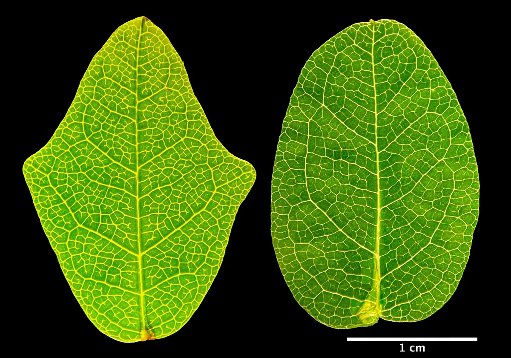

Spotlight Plants
Jerry's Intelligent Plant
n 1973, a book claiming that plants were sentient beings that feel emotions, prefer classical music to rock and roll, and can respond to the unspoken thoughts of humans hundreds of miles away landed on the New York Times best-seller list for nonfiction. “The Secret Life of Plants,” by Peter Tompkins and Christopher Bird, presented a beguiling mashup of legitimate plant science, quack experiments, and mystical nature worship that captured the public imagination at a time when New Age thinking was seeping into the mainstream. The most memorable passages described the experiments of a former C.I.A. polygraph expert named Cleve Backster, who, in 1966, on a whim, hooked up a galvanometer to the leaf of a dracaena, a houseplant that he kept in his office. To his astonishment, Backster found that simply by imagining the dracaena being set on fire he could make it rouse the needle of the polygraph machine, registering a surge of electrical activity suggesting that the plant felt stress. “Could the plant have been reading his mind?” the authors ask. “Backster felt like running into the street and shouting to the world, Plants can think! ”
Backster and his collaborators went on to hook up polygraph machines to dozens of plants, including lettuces, onions, oranges, and bananas. He claimed that plants reacted to the thoughts (good or ill) of humans in close proximity and, in the case of humans familiar to them, over a great distance. In one experiment designed to test plant memory, Backster found that a plant that had witnessed the murder (by stomping) of another plant could pick out the killer from a lineup of six suspects, registering a surge of electrical activity when the murderer was brought before it. Backster’s plants also displayed a strong aversion to interspecies violence. Some had a stressful response when an egg was cracked in their presence, or when live shrimp were dropped into boiling water, an experiment that Backster wrote up for the International Journal of Parapsychology, in 1968.
In the ensuing years, several legitimate plant scientists tried to reproduce the “Backster effect” without success. Much of the science in “The Secret Life of Plants” has been discredited. But the book had made its mark on the culture. Americans began talking to their plants and playing Mozart for them, and no doubt many still do. This might seem harmless enough; there will probably always be a strain of romanticism running through our thinking about plants. (Luther Burbank and George Washington Carver both reputedly talked to, and listened to, the plants they did such brilliant work with.) But in the view of many plant scientists “The Secret Life of Plants” has done lasting damage to their field. According to Daniel Chamovitz, an Israeli biologist who is the author of the recent book “What a Plant Knows,” Tompkins and Bird “stymied important research on plant behavior as scientists became wary of any studies that hinted at parallels between animal senses and plant senses.” Others contend that “The Secret Life of Plants” led to “self-censorship” among researchers seeking to explore the “possible homologies between neurobiology and phytobiology”; that is, the possibility that plants are much more intelligent and much more like us than most people think—capable of cognition, communication, information processing, computation, learning, and memory.
The quotation about self-censorship appeared in a controversial 2006 article in Trends in Plant Science proposing a new field of inquiry that the authors, perhaps somewhat recklessly, elected to call “plant neurobiology.” The six authors—among them Eric D. Brenner, an American plant molecular biologist; Stefano Mancuso, an Italian plant physiologist; František Baluška, a Slovak cell biologist; and Elizabeth Van Volkenburgh, an American plant biologist—argued that the sophisticated behaviors observed in plants cannot at present be completely explained by familiar genetic and biochemical mechanisms. Plants are able to sense and optimally respond to so many environmental variables—light, water, gravity, temperature, soil structure, nutrients, toxins, microbes, herbivores, chemical signals from other plants—that there may exist some brainlike information-processing system to integrate the data and coördinate a plant’s behavioral response. The authors pointed out that electrical and chemical signalling systems have been identified in plants which are homologous to those found in the nervous systems of animals. They also noted that neurotransmitters such as serotonin, dopamine, and glutamate have been found in plants, though their role remains unclear.
Hence the need for plant neurobiology, a new field “aimed at understanding how plants perceive their circumstances and respond to environmental input in an integrated fashion.” The article argued that plants exhibit intelligence, defined by the authors as “an intrinsic ability to process information from both abiotic and biotic stimuli that allows optimal decisions about future activities in a given environment.” Shortly before the article’s publication, the Society for Plant Neurobiology held its first meeting, in Florence, in 2005. A new scientific journal, with the less tendentious title Plant Signaling & Behavior, appeared the following year.
Depending on whom you talk to in the plant sciences today, the field of plant neurobiology represents either a radical new paradigm in our understanding of life or a slide back down into the murky scientific waters last stirred up by “The Secret Life of Plants.” Its proponents believe that we must stop regarding plants as passive objects—the mute, immobile furniture of our world—and begin to treat them as protagonists in their own dramas, highly skilled in the ways of contending in nature. They would challenge contemporary biology’s reductive focus on cells and genes and return our attention to the organism and its behavior in the environment. It is only human arrogance, and the fact that the lives of plants unfold in what amounts to a much slower dimension of time, that keep us from appreciating their intelligence and consequent success. Plants dominate every terrestrial environment, composing ninety-nine per cent of the biomass on earth. By comparison, humans and all the other animals are, in the words of one plant neurobiologist, “just traces.”

Plant Talk
Topic of Discussion ---Can Plants See? In the Wake of a Controversial Study, the Answers Still Unclear
A tiny pilot study found that so-called chameleon vines mimicked plastic leaves, but experts say poor study design and conflicts of interest undermine the report.
The vine Boquila trifoliolata is a shapeshifter. As it winds its way up trees and other flora in the Chilean rainforest, its leaves change to resemble those of the plants it uses for support or, sometimes, neighbors it isn’t in contact with. It does such a good job of pretending to be other plants that although the vine was first described in the 1800s, its talent for impersonation remained secret until only about a decade ago. In the early 2010s, Ernesto Gianoli, a plant ecologist with the University of La Serena in Chile, realized that what appeared to be a strange-looking stem from a tree was in fact a B. trifoliata vine, the leaves of which perfectly blended in with the tree’s actual leaves. Once he saw that, he spotted the vine mimicking all sorts of plants—more than 20 species so far—by tweaking the size, shape, and color of its leaves.
Gianoli reported his findings in a 2014 Current Biology paper, but to this day, no one is certain how B. trifoliolata pulls off its impressive masquerades. Gianoli initially speculated that the vines pick up something from the plants they copy—volatile chemicals, perhaps, or genetic material that helps steer their leaves’ growth. Most recently, he discovered microbiome similarities between the mimicking vines and their models, hinting that bacteria could be involved. But in a paper published online last year in Plant Signaling and Behavior, citizen scientist Jacob White and University of Bonn graduate student Felipe Yamashita claim to have found evidence for a different hypothesis: that the vines can “see” other plants’ leaves, at least well enough to copy their looks.
See “Eyeless C. elegans Perceives Colors: Study”
To some, the paper was thrilling. It was recommended as “exceptional” on Faculty Opinions, a website where selected experts in the life sciences highlight notable, high-quality papers. And a viral TikTok video on the findings, posted by a popular plant-themed account, racked up more than 2.3 million views and 525,000 likes as of this story’s publication.
But some researchers sounded alarms. “This is a deeply flawed article based on a poorly designed experiment and reflects significant author bias in the interpretation of the results,” wrote Washington State University horticultural physiologist Linda Chalker-Scott in a blog post earlier this year.
Experts who spoke with The Scientist about the research similarly raised red flags about the study itself and had pointed questions about the publication process. Meanwhile, the study’s authors and handling editor stand by the paper, although they say it was never meant to be the final word on either plant vision or B. trifoliolata’s mimicry.
The one thing everyone agrees on is that these vines are remarkable—and that understanding how they perform their impersonations will change our understanding of how plants work.
A citizen scientist and a bold hypothesis
White, a homemaker in Utah with a passion for science and plants but with no formal scientific training, says he got the idea for the study after reading about the eye-spots of Chlamydomonas algae and the lens-like cells of certain cyanobacteria. He says he wondered if a similar sort of rudimentary vision might be common to all plants. That’s when he came across a 2016 mini-review by University of Bonn plant physiologist František Baluška and University of Florence plant neurobiologist Stefano Mancuso suggesting that plants have eye-like structures that afford them a form of vision. Eager to learn more, White ponied up the nearly $40 fee to view the article, he tells The Scientist.
In it, he read about botanist Gottlieb Haberlandt’s 1905 hypothesis that the upper epidermal cells of leaves may function as simple eyes (ocelli)—and about B. trifoliolata’s touchless mimicry, which the review authors suggested could be facilitated by the vines seeing their neighbors. White searched for follow-up experiments—and for anyone who seemed to be testing for vision in plants, and especially in the mimicking vines. But no one, it seemed, was actively looking into the idea.
“I think there’s a degree of dogmatism in science,” White says, which results in the premature rejection of ideas that challenge the current consensus.
He then thought about how such a test could be conducted. And that’s when it dawned on him: The other hypotheses about B. trifoliolata’s mimicry hinged on biological compounds transferring from model to vine. But if the vine can see, it might be fooled by anything that resembles a plant—including an artificial one, which would rule out a mechanism based on transfer of compounds. So White found a nursery in Port Townsend, Washington, with B. trifoliolata and ordered a vine for himself. After it arrived, he gave it a fake plant to grow on and waited.
Lo and behold, he says he observed what appeared to be an attempt by the vine to mimic the fake leaves as it grew up the artificial plant. Excited, he took pictures and sent them to Baluška. He didn’t really expect a response, he says, but when he got one, he was elated. Baluška suggested he try a fake plant that looks more like something that could be found in Chile. White did, and the vine seemed to mimic it as well.

Identify Plants!
Need help identifying a plant? Find out what your plant is today!